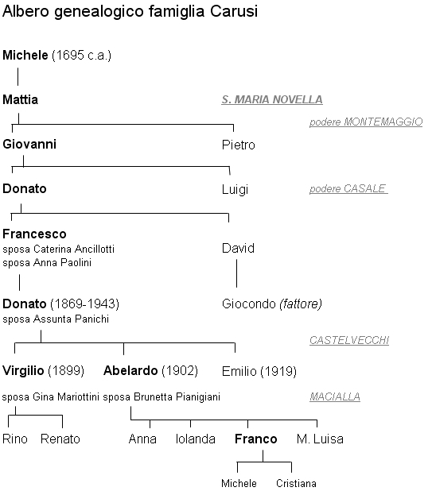
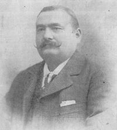
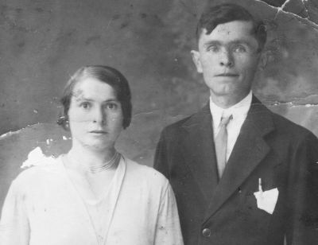
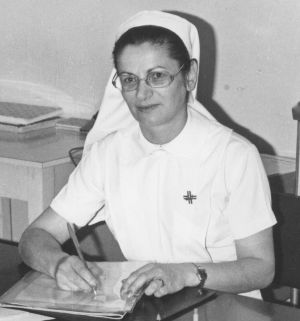

Quercegrossa (Ricordi e memorie)
CAPITOLO II - FAMIGLIE DEL '900
Indice dei Capitoli
Indice Famiglie del '900
CARUSI (1927 - Residenti); mezzadri; Macialla/Quercegrossa; da S. Maria Novella.
Dalla parrocchia di S. Maria Novella, nel territorio di Radda, si ricavano i dati più antichi relativi alla famiglia Carusi, entrata nel nostro popolo nell'anno 1924.
1786 - podere Monte maggio
Esattamente alla fine del Settecento risale la prima documentazione che vede la famiglia dimorante al podere Monte maggio, con il capoccio Mattia di Michele Carusi. In quel 1786, Mattia è dato di 57 anni, quindi è nato verso il 1730. Al vicino podere Selva abita il fratello Pasquale, di 62 anni, nato quindi nel 1724/25, e al podere Balza vive Giuseppe il terzo fratello di 54 anni.

Si può supporre, allora, che il loro padre Michele sia venuto al mondo tra il 1690 e il 1700, e questo è il dato più remoto della famiglia Carusi che si può ricavare dalla documentazione. Mentre le famiglie di Pasquale e Mattia contano rispettivamente dodici e dieci persone, in casa di Giuseppe sono soltanto in tre: lui, la moglie e la piccola figlia. Per questo ha preso due garzoni "dell'ospedalino di Siena": Giovanni Battista di 14 anni, e Luigi di 10. Lasciando perdere Pasquale al podere Selva, vediamo che a Monte maggio Mattia vive con la consorte Alessandra Romagni, e tra i suoi sette figli c’è Giovanni, il maggiore di 26 anni, sposato con M. Anna Provvedi di 20 anni. Passiamo al 1799, dove Mattia è diventato Amaddio, che probabilmente era il suo nomignolo corrente; Giovanni sta prolificando ed è già nato Donato. Alla Balza non c'è più Giuseppe Carusi: se ne è andato. Lo ritroviamo alcuni anni più tardi pigionale a Tegline, ed è rimasto solo con la moglie di 64 anni. Anche lui è un vecchio operaio ultrasessantenne e gli si prospetta una dura vecchiaia. La nascita di una sola figlia rappresentava la fine per un nucleo familiare. La grossa novità che abbiamo, nel 1804, è Pietro capofamiglia. Infatti, sono morti sia il vecchio Mattia che Giovanni, e questi ha lasciato la vedova M. Anna con i figli Angiola, Angiolo, Luigi e Donato. I venti anni successivi trascorrono senza grosse novità in famiglia. Solo Pietro aveva celebrato il suo secondo matrimonio, dopo la morte della prima moglie, e i giovani sono cresciuti.
1828 - podere Casale
C'è stato anche il cambio di residenza, avvenuto dopo il 1819, e nel 1828 al podere Casale si presenta questa situazione: il 60enne Pietro del fu Mattia è a capo di una famiglia di quattordici persone. Oltre ai suoi figli, avuti dalle due mogli, convive il nipote Donato, figlio del fu Giovanni, con la coniuge Violante Colomboli e i figli Serafina (1821), M. Assunta (1822), Annunziata (1824) e Anastasio (1826). Donato ha 33 anni, è nato quindi intorno al 1795, ed è lui il capostipite dei Carusi di Quercegrossa. Manca in questo elenco Luigi, il fratello che appare come capoccio nel 1840, l'anno nel quale abbiamo ulteriori dati. Luigi è nato nel 1794, l'anno prima di Donato ed è coniugato con Maria Tozzetti da almeno quindici anni. Si può supporre quindi che in precedenza svolgesse mansioni di salariato o coltivasse un proprio podere da qualche parte prima di rientrare in casa Carusi. La famiglia conta ora (1840) diciotto persone, divise nei nuclei di Luigi e Donato che in questi anni ha incrementato le nascite: Luisa (1828), Francesco (1830), Margherita (1835), Filomena (1837) e David (1839). Il totale è di nove figli viventi, e bisogna aggiungerci Carolina, che nascerà nel 1842 e porterà il conto a dieci. Del ramo di Pietro ci sono rimasti solamente la seconda vedova Maddalena Gori e Mattia, un figlio celibe di 37 anni. Procedendo in avanti nel tempo, al podere Casale, nel 1859 Francesco di Donato è il capoccio. Egli ha 29 anni ed è sposato. La moglie è Caterina Ancillotti, presa cinque anni prima, e ha iniziato a dargli alcuni figli che chiameranno Gioconda, Anna, Emilia ed Emilio. Nel 1867 Francesco è vedovo e si risposa con Anna Paolini dalla quale avrà altri eredi tra cui Donato del 1869. Successivamente, nel 1888, abbiamo sempre una numerosa famiglia di sedici persone composta dai nuclei di Francesco e del fratello David, ma non passerà molto tempo che Francesco si separerà e lascerà il Casale. Nel frattempo gli nascono altri figlioli dalla seconda moglie: Mariano, Fortunata, Cesira e Regina. Spariti quelli della prima moglie.

1898 - podere Vigna maggio e Casa Lanzini
Dal 1898 si registra la prima grossa variazione di indirizzo: Francesco ha lasciato il Casale e abita a Vigna Maggio, che nel 1900 è detta Casa Lanzini, e fra poco il parroco inizierà ad indicare quelle case come Castelvecchi. Donato si è sposato, forse nel 1898, con Assunta Panichi e da questo matrimonio nasceranno Virgilio (1899), Abelardo (1902) ed Emilio nel 1919, la generazione di Quercegrossa. Nel 1910 a Castelvecchi David ha raggiunto il fratello Francesco e le case n° 14, 15 e 16 sono occupate dalle famiglie Carusi. Al n° 14 abita il fattore Giacomo Carusi di David con la moglie e due sottofattori; al n° 15 David Carusi con i figli Ferdinando, Antonio ed Eusebio e nipoti, in tutto sedici persone; al n° 16 risiede Francesco Carusi con i figli Donato e Mariano che hanno sposato le due sorelle Panichi, Assunta e Cesira.
Nella foto: Carusi Emilio.

Abelardo Carusi e la moglie Brunetta.
Quercegrossa
Ma si avvicina l'anno in cui il ramo di Francesco si sta per allontanare per sempre dalle secolari terre della famiglia. Sarà il 1924 l'anno della loro partenza da Casa Lanzini, detta anche La Vigna di Castelvecchi, per arrivare a Macialla di Quercegrossa. Sorge un dubbio su quest'ultima data, in quanto i documenti fissano la data di arrivo a Macialla al marzo 1927. Se fosse così, i Carusi avrebbero abitato per quasi tre anni in altro e sconosciuto luogo. Nel 1927, a Macialla si conclusero i lavori di miglioramento e ampliamento della fattoria; i poderi diventarono tre e i Carusi occuparono le case della vecchia costruzione, insieme ai Finetti. Donato vi si trasferì con Assunta e i figli Virgilio, Abelardo e Livio.

Quest'ultimo si trasferì poi a Poggibonsi nel 1933, e gli altri due misero su famiglia. Virgilio aveva preso Gina Mariottini a S. Maria Novella il 24 aprile del 1925, mentre Abelardo si sposerà a Rencine il 12 aprile 1931 con Brunetta Pianigiani. Nasceranno i gemelli Rino e Renato (1926) di Virgilio, e Anna (1933), Iolanda (1937), Franco (1941) e Maria Luisa (1943) di Abelardo.
Iolanda Carusi di Abelardo. Nata a Quercegrossa si diplomò infermiera al Careggi di Firenze e vi svolse la sua professione fino alla pensione per poi ritornare a Quercegrossa dove è deceduta di recente.
l 20 dicembre del 1943 morì Donato all'età di 74 anni e Assunta gli sopravvivrà di un decennio fino al 31 maggio 1955. Nel 1962 i Carusi misero fine al loro rapporto di mezzadri e si divisero: il ramo di Virgilio a Poggibonsi e l'altro, di Abelardo, prima a Siena e poi di nuovo a Quercegrossa. Da ricordare Iolanda, rimasta nubile e morta recentemente, e i matrimoni di Anna con Sergio Burrini nel 1957, e di Maria Luisa coniugata Chellini, entrambe rimaste a Siena. Franco, sposatosi con Luisa Mori, prese dimora a Quercegrossa dove ancor oggi vive con i figli Cristiana e Michele.
Abelardo Carusi da giovanotto.
CASAGLI (1907-1907); pigionali; Gallozzole; da Monteroni.
Una puntata veloce da Monteroni a Quercegrossa e ritorno, quella di Domenico Casagli, pigionale alle Gallozzole nel 1907. Un anno senza dati.
CASINI (1917-1927); operanti; Castellare; da Siena.
Dieci anni come operante al Castellare per Adamo Casini proveniente da Siena insieme alla moglie Giulia Cannoni. Di questi anni si registra soltanto la perdita del loro figlio Duilio, morto di un anno e mezzo il 7 settembre 1919 nella pigione del Castellare.
CASPRINI (1900-1904); mezzadri; Quetole.
Casprini Giuseppe di Lorenzo e di Rosa Mori, nato a Castelnuovo B.ga, di anni 35, fece entratura a Quetole il 3 marzo 1899, conducendo la prolifica moglie Maria Merchionni, nata a Gaiole, che a 29 anni custodiva una nidiata di otto ragazzi che andavano da pochi mesi a 10 anni. Ma non era finita, perché nel 1901 nasce Ida e infine Erminia il 30 gennaio 1902. Il ristretto periodo di tempo delle nascite merita di essere conosciuto: Isolina (1889), Giuseppe (1890), Egidio (1891), Giulia (1892), Vittoria (1894), Vittorio (1896), Ada (1897), Assunta (1898) alle quali vanno aggiunte le gia citate Ida ed Erminia, che fanno dieci. La loro partenza nel marzo 1904 ci impedisce di sapere come finì la storia.
Inizio pagina
Indice famiglie del '900
Indice dei Capitoli
|